layout: investigation.html title: "Shelling Harasta with Napalm" date: 2018-02-15 desc: ""
Harsta is one of the strategic areas in the eastern Ghouta, and it's situated on the international highway between Homs and Damascus. The city is overlooking a large number of security and intelligence centers belonging to the Syrian government, such as "The Management of military vehicles," "The Air Force Intelligence branch," "111 Tunk depo", and others.
Harasta has a population of 34,184 (2007 census) and considers as the northern gate of the Syrian capital where it's far 5 km away from it.
The first demonstration video we could find for Harasta back to 8 April 2011 which chanted 'The Syrian people will not be humiliated' and 'We want freedom.' Demonstrations continued during 2012, while in April 2013 the Free Syrian Army took control of most of the city's neighborhoods. In this video, one of the FSA fighters in a field interview states that they have taken over 75% of the city.
Harasta has been bombed by poison gas several times over the past years, such as the strike on 20 October 2014 and the one on 25 December 2014.
Since rebel groups took control of Harsta, the region has become a battlefiled. On 22 July 2017, the Russian Ministry of Defense announced that a de-escalation agreement had been signed for Eastern Ghouta. On 16 August 2017, a Failaq al Rahman representative and a Russian representative signed an agreement that established Failaq al Rahman’s inclusion in the de-escalation zone, to come into effect on 18 August.
However, SOHR reported that government bombing resumed in Eastern Ghouta on 27 September 2017, one of thoes attakcs targeted a kindergarten on 6 November in Harasta resulting eight children dead and scores injured.
In mid-November 2017 Syrian rebels in Harasta launched a military operation called "They were Wronged" against positions of the Syrian Arab Army in Harasta. Ahrar al-Sham announced the launch of this battle as a response to the deteriorating humanitarian situation, and the repeated bombing of the regime in the villages and towns in Eastern Ghouta.
In the morning of 28 January 2018 at 09:37 AM (Damascus local time) the "Damascus Countryside Reporters Network" published on their Twitter account that several rockets were heavy struck Harasta city, after that on 10:25 AM (Damascus local time) they reported an airstrike targeted Harasta city.
Ghouta Media Center also published at 10:30 AM on their Twitter account that two airstrikes targeted Harasta. Aljazeera Syria reported at 10:43 AM that several airstrikes were targeting Harasta City :
#الجزيرة_سوريا | مراسلنا: طائرات النظام تشن غارات جوية على مدينة #حرستا في الغوطة الشرقية بريف #دمشق pic.twitter.com/9ToLowCkVT
— الجزيرة سوريا (@AJA_Syria) January 28, 2018
In the same day, and after several hours Mohammad Yaseen, a citizen journalist, who based in Damascus countryside reported on his Twitter account at 05:25 PM (Damascus local time) that residential neighbourhoods in Harasta targeted by more than 18 missiles with napalm resulting number of fires in thoes buildings.
The Syrian Observatory for Human Rights published that the Syrian government resumed the shelling on Harasta city with 18 missiles believed to be surface-to-surface missiles, resulting of number of fires in the neighborhoods building.
The Syrian Civil Defense in Damascus countryside published several videos on 28 Jan 2018 showing the rescue of civilians, one video shows Civil Defense members run towards the fires, then enter a building, and ask a children where their parents and then take them out of the building while the fires spread in the place, see below:
Other video shows destruction and fires in a residential neighborhood, the Civil Defense members enter a burning building and shouting: "Is this building inhabited? Is there anybody inside?" in the second 0:47 someone says, "Evacuate the place, there is a reconnaissance aircraft" In the second 0:53 a voice can be heard shouting "Our house is burning here" then civil defense members running toward the building, see below:
Yaser Aldoumani, a journalist based on Damascus countryside, published a video on his youtube channel featuring an interview with Al-Arabiya TV, in the video Yaser said: "Harasta city attacked at about 5 pm with ten rockets loaded with napalm. Fire broke out throughout the city. There were about 40 fires in residential buildings, roads and cars, and many injuries were recorded as a result of burns. On the morning the city bombed with 40 surface-to-surface missiles and 60 artillery shells, 11 air strikes, resulting in killed Abdullah Shaker and dozens wounded"
Smart News Agency also published a video on their youtube channel shows Syria Civil Defense members while putting out the fires in a building, in the video a person can be heard saying, "There is nobody here, we evacuated all of them", see below:
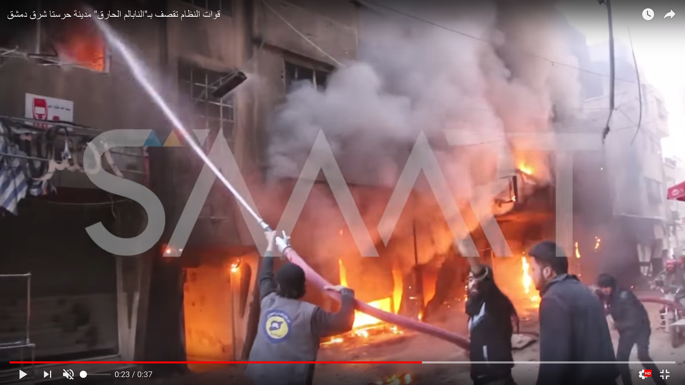
Further reports had been published in the next two days informed that Harasta city targeted again by surface-to-surface missiles loaded with napalm. On 29 January 2018 Syrian Civil Defense published a video shows attempts to extinguish fires, see below:
Also, they published another video showing footage of attacking the city in the next day (30 Jan 2018) and the resulting fires, see below:
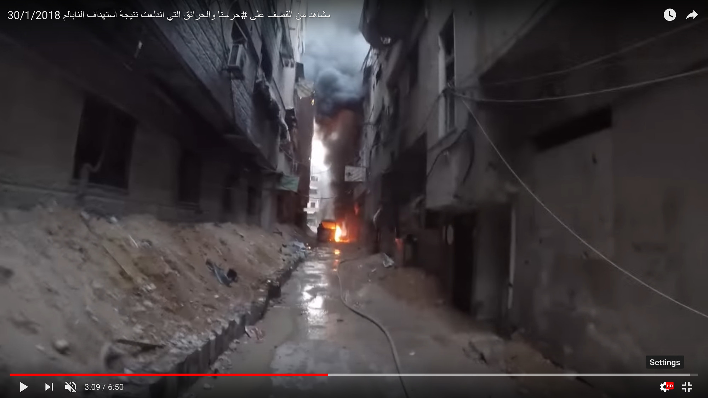
On 31 Jan 2018 the operation room of "They Were Wronged" battle confirmed on their Twitter account the targeting of Harasta city on the previous day, by more than 27 surface-to-surface loaded with napalm , see below:
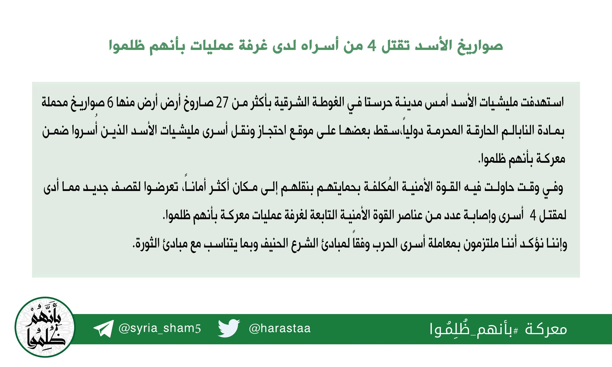
On 28 January 2018 the Local Council of Harasta city stated on their Facebook page that the Syrian regime targeted various parts of Harasta city at 5:00 PM (Damascus local time) by ten missiles loaded with napalm which set about 35 fires to residential building, and after ten minutes the city was targeted again by more than ten missiles resulted in extensive destruction of homes, roads and civilian's cars:
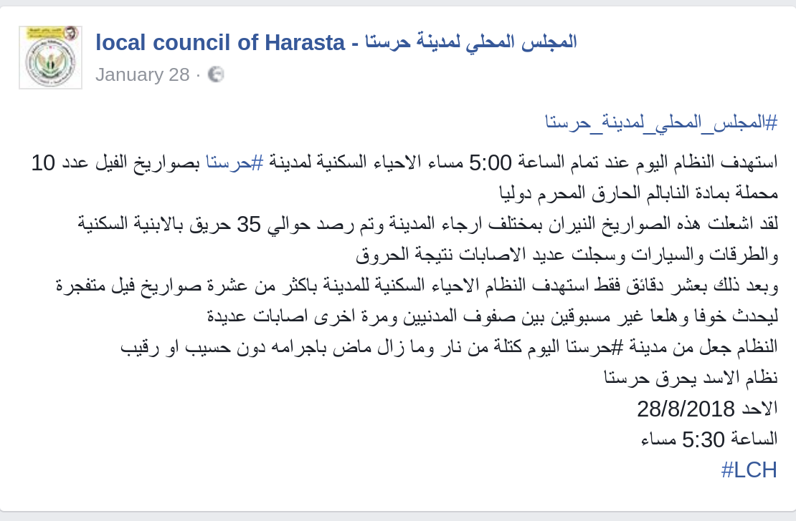
The Syrian Archive was able to match several objects between the Syrian Civil Defense's video and SMART News Agency's video which confirms both documented the same location. See below:
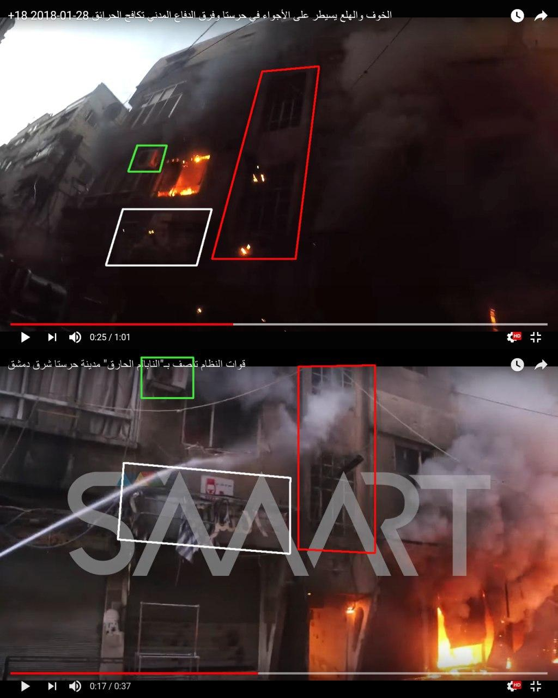
Other objects were identified from different footage of the same location using the same videos above:
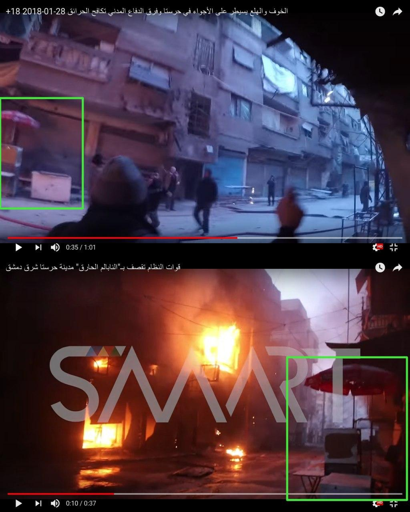
In the Syrian Civil Defense video, a banner can be seen that states: "Jaber Library" See below:
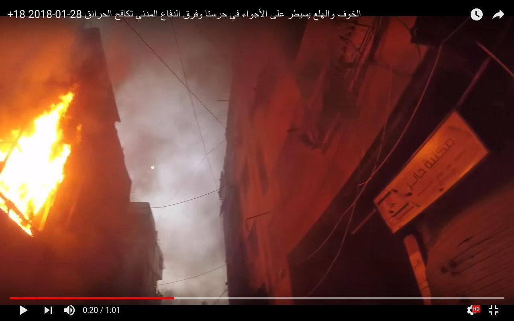
The Syrian Archive found a Facebook page with the same name and banner, which located in Harast city as shown in 'About' section in the Facebook page, which supports the Harsta Local Council's statement and the above videos' claim:
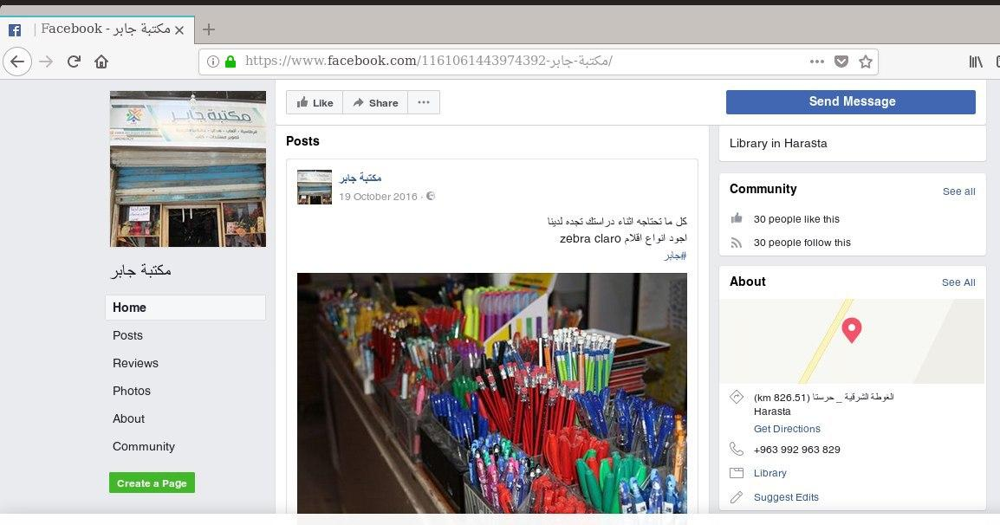 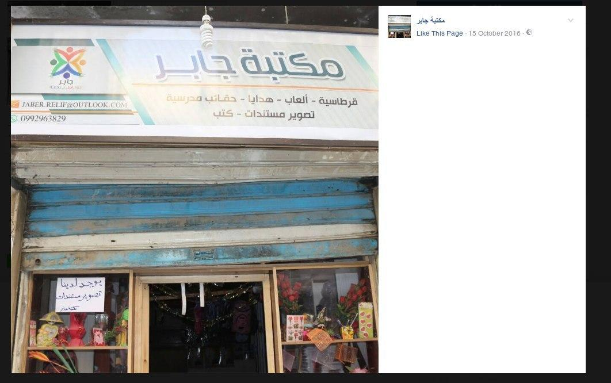
In another video from Syrian Civil Defense, a banner can be seen said: "Cheese & Dairy workshop" Which also confirms that the targeted buildings were residential:
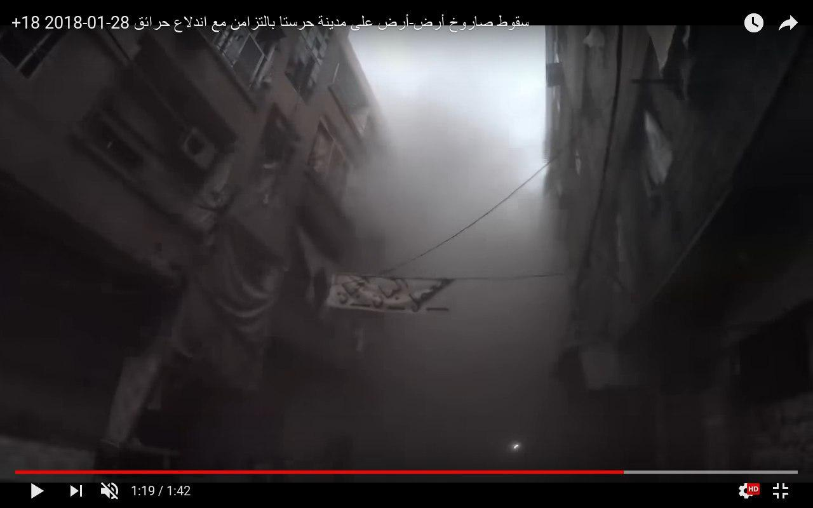
According to several testimonies collected by Syrians for Truth and Justice the first attack happened at exactly 5 PM (Damascus local time). Hassan al-Kabees, a resident of Harasta who were present at the scene of the first attack, assured STJ that more than 15 ground-to-ground missiles landed on the city on January 28, 2018, 10 of which were loaded with incendiary substances (similar to napalm), where he said:
"At 5:00 p.m., I saw the rockets landed on the buildings facing my house, and they had earlier landed directly on a huge population centre and resulted in burn injuries for about 18 civilians, as well as the material damage caused by the shelling, where the napalm burned over 50 houses in our neighbourhood only. While I was helping in putting out fires and rescuing the wounded, the Syrian regime shelled the same area again with ground-to-ground missiles loaded with explosive materials in order to make the fires devour as much space as possible. Fire suppression process lasted more than 12 hours, the more we tried to put it out, the more it flared up elsewhere.
Hassan continued that the Syrian regular forces had bombed Harasta again on January 30, 2018, specifically at 6:00 p.m., in order to cause panic and fear among people. In this regard, he added:
"On that day, Harasta was shelled with more than 25 ground-to-ground missiles, six of which were loaded with incendiary substances, burning down more than five buildings, as well as a number of shops and buses, the regime also targeted the region with explosive rockets to hinder the rescue operations and the extinguish of fires. The regime deliberately shelled the residential compound, which is one of the most populated areas in Harasta, noting that there is no military headquarters within these targeted areas. We feel like the earth closed in on us, we don’t know where to go, we are in a state of a constant displacement, and we are no longer able to settle in one place."
In one of the videos published by Syrian Civil Defense on 28 Jan 2018 the moon can be seen in the sky and it's almost fully, see below:
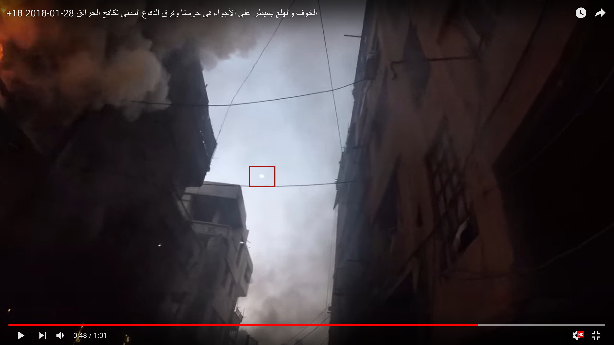 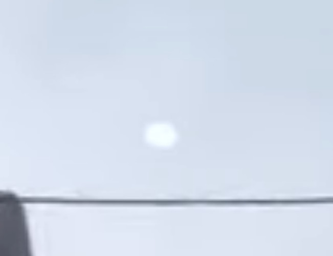
The Syrian Archive was able to confirm the moon llumination was 87% on 28 Jan 2018 from Moongiant site:
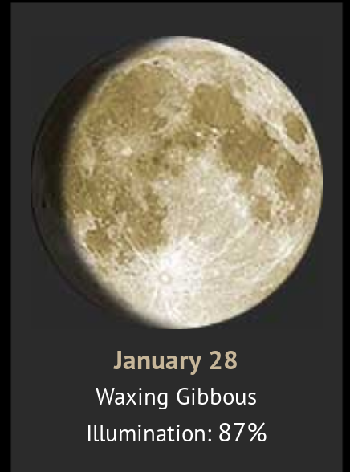
As indicated in witness testimonies, the Local Council of Harasta city statement and the above videos, the attack was carried out using surface-to-surface missiles. The Local Council of Harast published photos of a munition that is claims was used in the attack:
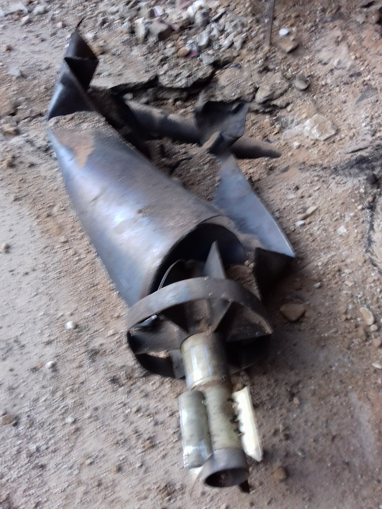
Ahmed al-Talli, a fighter of the Syrian armed opposition, told STJ that during the recent escalation campaign, Harasta used to be bombed with ground-to-ground missiles or the so-called "elephant" rockets, noting that the Syrian regular forces had modified these rockets, by loading them with incendiary substances, and in this regard, he continued:
"The "Elephant" rocket is a "Grad" missile, which has ranges between 20 to 40, the Syrian regime amended it, by removing its explosive warhead and installing another, carrying a large quantity of explosives and incendiary substances, which may be soap or rubber added to gasoline. The amount of incendiary substances the Elephant rocket can be loaded with, is the same of the explosive substances’ its head can carry."